What this page is for
A purchase order (PO) is an order we send to a vendor. Each PO has lines. One line = one part and how many we ordered.
Who uses it: Becca makes and sends POs. Everyone can look.
Before December 1, make real POs in Fishbowl. In RemBase, practice only on your own practice PO (TEST-PRACTICE-BECCA, -CHAD or -SABITH). A brand-new PO you make before December 1 gets a PRACTICE- number, not a real PO number. Use the TEST Vendor and TEST parts on it. The pictures use TEST-HB-1.
Sub-pages
| Sub-page | What it is for |
|---|---|
| Purchase Orders | All POs. Open one to see its lines. |
| PO Planning | What we should order next. |
| PO Planning – Commit | Turns the planning ticks into POs. Becca only. |
| PO Variance Report | PO lines that came in short, over or damaged. |
| Excluded from planning | Parts that planning ignores, like TEST parts. |
Task: find and open a PO
Click Purchase Orders in the menu.
Find the PO in the list. For practice, use your own practice PO.
Click the PO number.
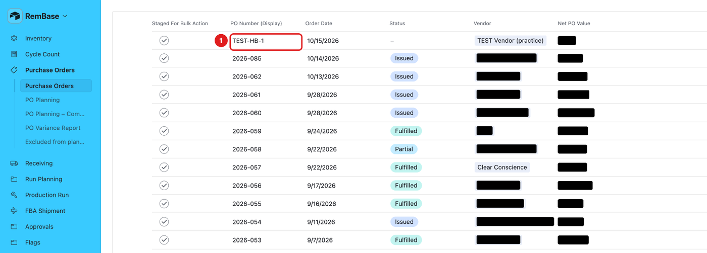

The PO opens on the right. You see its status, vendor, dates, notes and lines.
PO status:
- Issued – the PO is placed. Nothing has arrived yet.
- Partial – some of it has arrived.
- Fulfilled – everything has arrived.
- Closed Short – closed before everything arrived.
- Cancelled – the PO was made by mistake or is not needed. Set Cancelled. Never delete a PO.
Task: add a line to a PO (practice)
Open your own practice PO. Add a line for TEST-COMP-A or TEST-COMP-B.
In PO Lines, click the + under the last line.
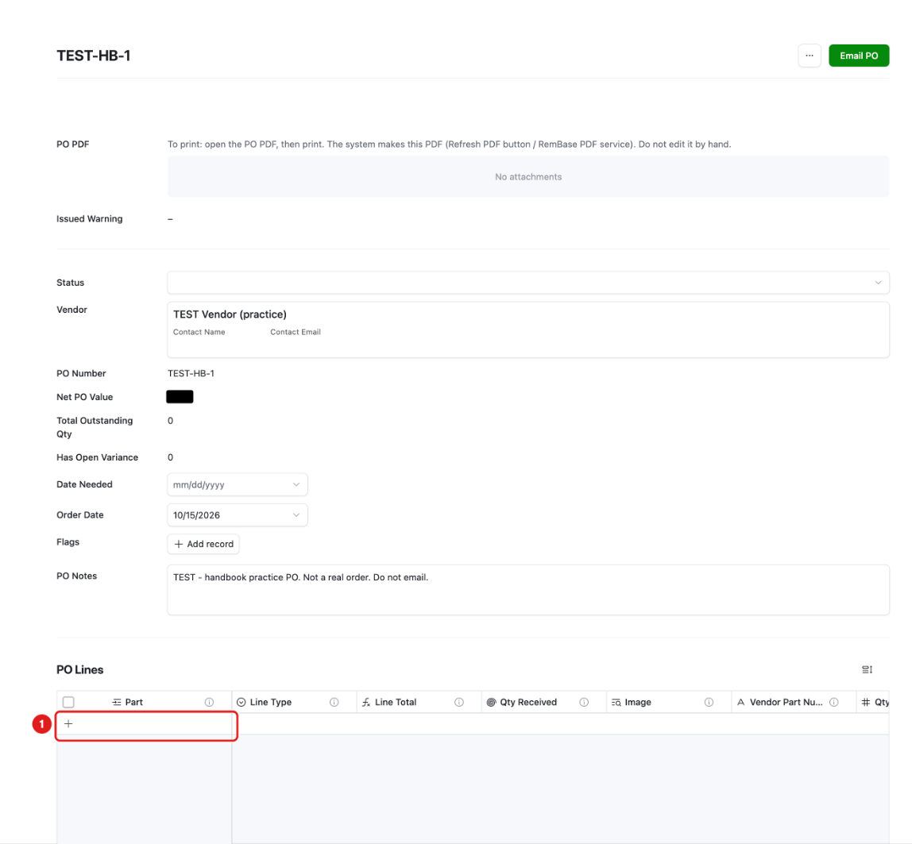
A new line appears. Click the + in its Part cell.
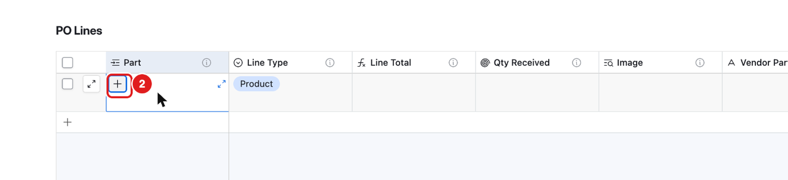
Type the part number. Click the right part in the list.
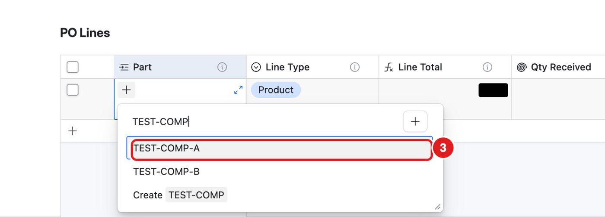
Never click Create “…” at the bottom of this list. It makes a new part that is left out of planning, and Becca gets a flag. If the part is missing, ask Becca to add it.
Point at the new line. Click the expand button (two small arrows).

Type the Qty Ordered.
Type the Unit Cost (the price for one unit).
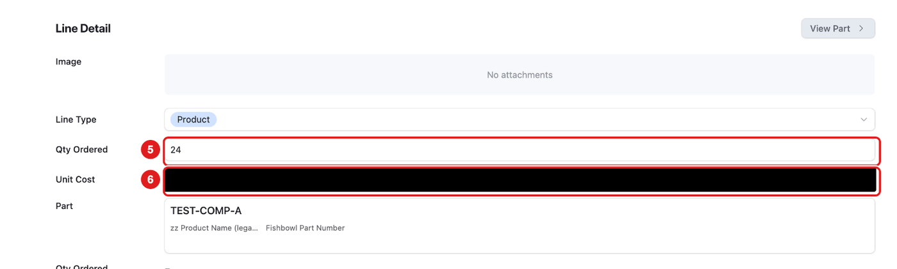
Press Tab. RemBase saves by itself.


PO status and Order Date
RemBase fills these in by itself:
- A new PO gets Status = Issued and today’s Order Date.
- When stock is received, the status changes to Partial or Fulfilled by itself.
You only change the status by hand if Becca asks you to. Click the Status box and choose the status.
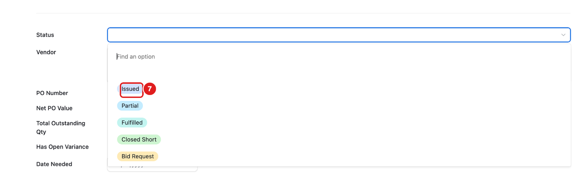
PO numbers
- A PO number starts with the year. Each new year starts again at 001.
- Before December 1, every new PO gets a PRACTICE- number. This is true for a PO you make on the Purchase Orders page and for a PO that PO Planning makes.
- Before December 1, PO Planning does not add lines to a real PO.
What you should see
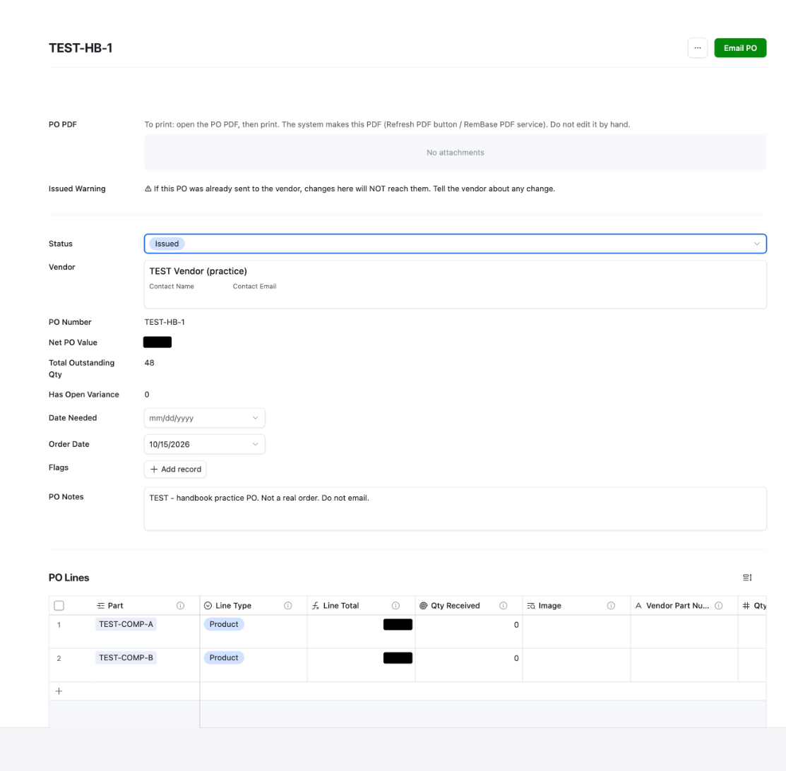
- Status Issued. When the stock arrives, it changes to Partial or Fulfilled by itself. (TEST-HB-1 is now Fulfilled, because both lines were received.)
- The lines are listed under PO Lines.
- Total Outstanding Qty = what has not arrived yet.
- Issued Warning: if a PO was already sent to the vendor, a change here does not reach the vendor. Tell the vendor yourself.
To print a PO
- Open the PO.
- Click the file under PO PDF.
- Print it from your browser.
RemBase makes the PDF by itself and makes it again after every change. Do not upload or change it by hand. If the file is missing after a few minutes, ask Becca.
PO Planning (look only)
PO Planning shows what we should order.
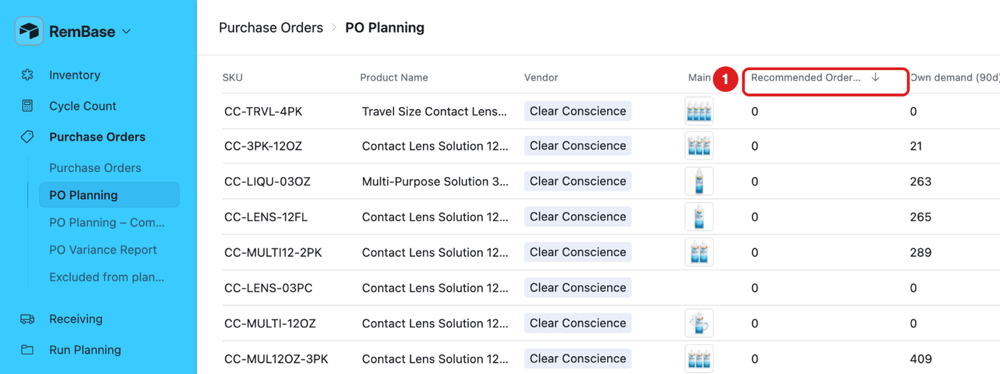
- 1 – Recommended Order Qty: how many the system suggests we order.
- It covers the next 90 days of sales.
- It uses the last 30 days’ sales rate.
- It is adjusted for the season (more before the holidays).
- Stock moving between Amazon warehouses counts as stock at Amazon.
- Clear Conscience lens and liquid show 0. Consigned stock that we can buy any time covers them.
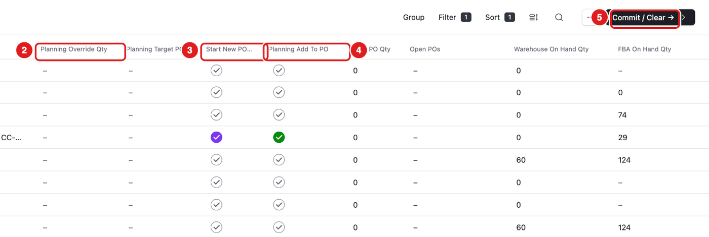
- 2 – Planning Override Qty: Becca types her own number here.
- 3 – Start New PO: tick to start a new PO for this part.
- 4 – Planning Add To PO: tick to add this part to a PO.
- 5 – Commit / Clear: goes to the Commit page. Becca only.
PO Planning – Commit (Becca only)
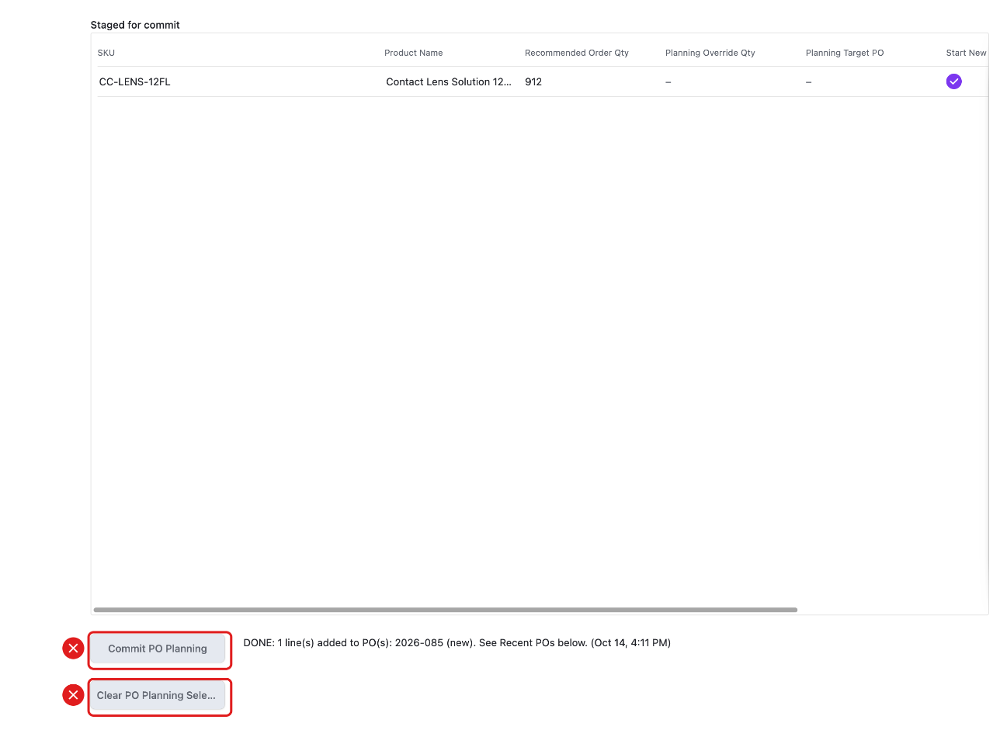
- Commit PO Planning makes the POs from the ticked rows.
- Clear PO Planning Selections removes all the ticks.
Before December 1, Commit only makes PRACTICE- POs. It does not add lines to a real PO.
Do not press these unless you are Becca.
Excluded from planning
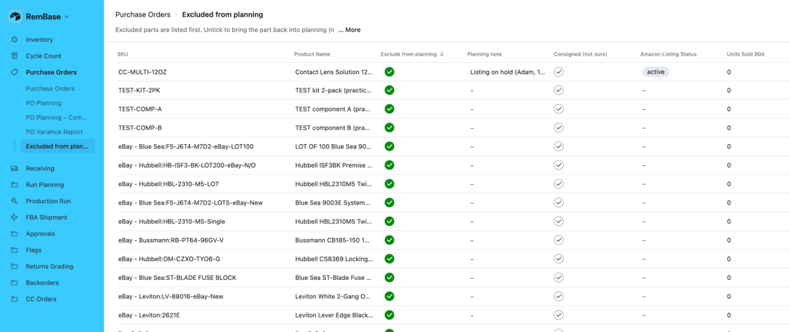
These parts are left out of planning. To bring a part back, Becca unticks Exclude from planning.
Common mistakes
- Pressing Email PO. It emails the vendor. See Do not press.
- Clicking Create “…” in the part list. It makes a new part that planning leaves out. Ask Becca to add the part.
- Changing an Issued PO and not telling the vendor. RemBase does not tell them.
- Ticking boxes in PO Planning to “try it”. The ticks are shared with Becca’s real planning.